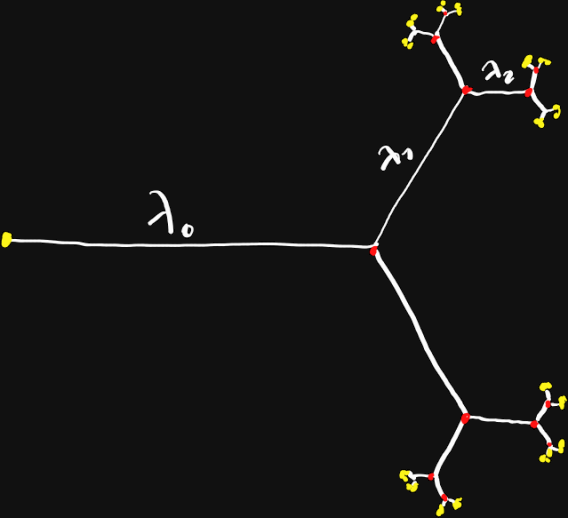

On the Steiner Tree connecting a fractal set
[E. Paolini: Università di Pisa]
Bressanone ‐ Jun 2, 2023
Is it minimal?
(Joint work with E. Stepanov)
Plan
- the classical Steiner Problem
- generalization to infinite sets
- minimality of the infinite self-similar complete binary tree


- no loops
- a priori bound on topology
- yellowuction to finite dimensional problem
Classical approach:
union of curves,
Ivanov-Tuzhilin (1984)
Set theoretic approach: compact sets, Hausdorff measure Ambrosio-Tilli (2004)
GMT approach: $G$-currents and calibrations, Marchese-Massacesi (2016)
Set theoretic approach
- the ambient is a metric space $X$
- the given is a compact set $\color{yellow} A$
- the unknown is a set $\color{white}S$
- the energy is the Hausdorff $\mathcal H^1$ measure
- the constraint is topological connectedness
possible formulations
Given a compact set $\color{yellow} A$,
find $\color{white} S$
such that $\mathcal H^1({\color{white}S})$ is minimal
among all sets such that (choose one):
(a) $\color{white} S$ is a compact connected set containing $\color{yellow} A$
(b) $\color{white} S$ is a compact connected set such that ${\color{white}S}\cup {\color{yellow}A}$ is also connected
(Ducret-Troyanov, 2008)
(c) ${\color{white}S}\cup {\color{yellow}A}$ is connected
(P.-Stepanov, 2012)
comparing the different formulations (a) (b) (c)


Tools
- compactness: the family of compact subsets of a compact space is compact in the Hausdorff metric
- lower-semicontinuity: $\mathcal H^1$ is l.s.c. with respect to the Hausdorff metric on connected sets (Gołąb)
Existence
If $X$ is a proper complete connected metric space then minimizers exist.Properties of minimizers, formulation (c)
If $\color{white} S$ is a minimizer with $\mathcal H^1({\color{white}S})<\infty$ then
- $\color{white} S$ contains no loops
- each connected component $C$ of ${\color{white}S}\setminus \color{yellow}A$ has $\mathcal H^1(\bar C) = \mathcal H^1(C) > 0$ and $\bar C$ has at most one single point on each connected component of $\color{yellow} A$
- connected components of ${\color{white}S}\setminus {\color{yellow}A}$ are countable
- ${\color{white}S}\setminus {\color{yellow}A}$ is a locally finite embedded tree composed by geodesic arcs
Example 1
 $$
{{\color{yellow}A}}=\left\{\left(\frac 1 n,\frac 1 m\right)\colon n,m \in \mathbb N \cup \{\infty\}\right\}
$$
Minimizers have infinite length.
$$
{{\color{yellow}A}}=\left\{\left(\frac 1 n,\frac 1 m\right)\colon n,m \in \mathbb N \cup \{\infty\}\right\}
$$
Minimizers have infinite length.
Example 2
${\color{yellow}A} \subset [0,1]$ totally disconnected, uncountable, $\mathcal H^1({\color{yellow}A})>0$, ${\color{white}S}=[0,1]\setminus {\color{yellow}A}$ (Cantor-like) $$ \#\{\text{c.c. of } {\color{yellow}A}\} > \#\{\text{c.c. of } {\color{white}S}\} $$ $$ \mathcal H^1(\bar {\color{white}S}) > \mathcal H^1({\color{white}S}) $$Example 3
If $\color{yellow} A$ is not bounded minimizers could not exist
Example 5 (open problem)
What if $\color{yellow} A$ is bounded but not closed?In this case minimizers exist and ${\color{white}S}\cup {\color{yellow}A}$ is connected but not pathwise-connected.
The self-similar full binary tree Example
- P-Stepanov-Teplitskaya (2015): $\color{white} S$ is the unique minimizer if $\lambda_n\to 0$ very fast.
- Cherkashin-Teplitskaya (2023): $\color{white} S$ is a minimizer if $\lambda_n = \lambda^n$ with $\lambda$ sufficiently small.